1. 目前進度總覽
ALU Provided
ALL PASS
31 個 instruction groups
ALL PASS
31 個 instruction groups
ALU Defense
44 / 44 PASS
額外 corner cases
44 / 44 PASS
額外 corner cases
FPU Provided
2000 / 2000 PASS
2000 / 2000 PASS
FPU Defense
27 / 27 PASS
27 / 27 PASS
Yosys / Verilator
本機交叉預檢完成
本機交叉預檢完成
VCS / JasperGold
待 SoC Lab 正式驗證
待 SoC Lab 正式驗證
目前基準：ModelSim 功能 regression 已完成；本機 Yosys / Verilator 也已做交叉預檢。現階段先鎖定 RTL，不因單一工具 warning 隨意改動，待 VCS / JasperGold Superlint 正式結果再決定是否需要最小修改。
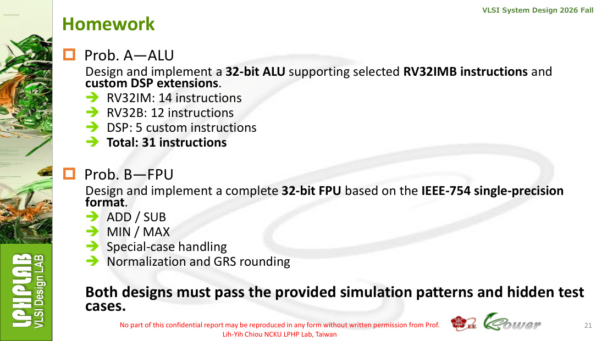
2. 老師作業題目與目前成果逐項對照
| 官方要求 | 投影片規格 | 目前程式／成果 | 狀態 |
|---|---|---|---|
| 32-bit ALU | RV32IM 14 + RV32B 12 + DSP 5 = 31 instructions | Src/ALU.sv 已完成 instruction decode 與 31 類運算；Provided tests 全 PASS | 完成 |
| 32-bit FPU | IEEE-754 single；ADD/SUB、MIN/MAX、special cases、normalization、GRS | Src/FPU.sv 含 fp_minmax 與 fp_addsub；Provided 2000/2000 PASS | 完成 |
| Hidden cases | 兩設計須通過 provided patterns 與 hidden test cases | 自行建立 Defense：ALU 44/44、FPU 27/27；注意這不是老師真正 hidden tests | 本機防禦完成 |
| VCS | 課程指定正式 simulator | 尚未回 SoC Lab 跑正式 VCS | 待完成 |
| Superlint | jg -superlint superlint.tcl；coverage ≤80% 有扣分 | 已有 Superlint.tcl 與 HW1_lint_top；正式 JasperGold 尚未跑 | 待完成 |
| Report / submission | Report PDF + 指定 hierarchy + .tar | 報告內容與本整合 HTML 已建立；最終 PDF/hierarchy/tar 尚需收尾 | 部分完成 |
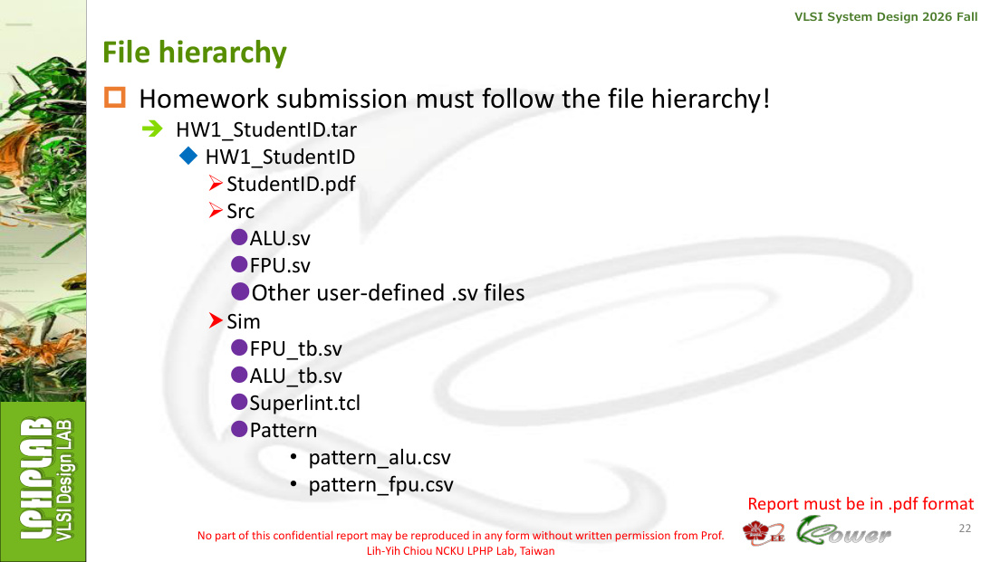
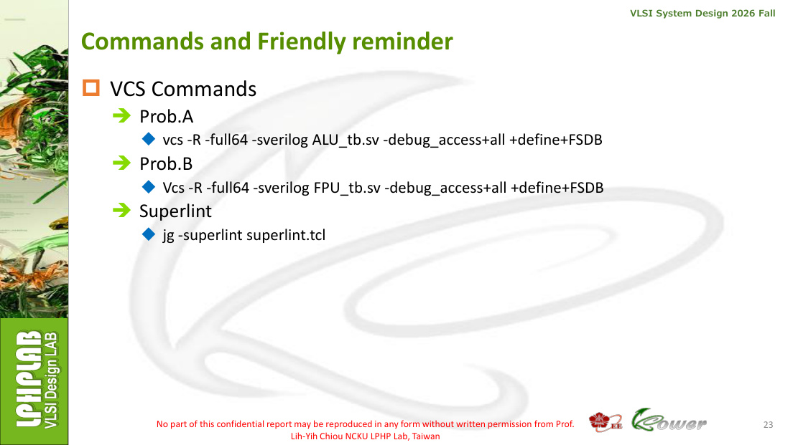
3. Problem A — ALU：投影片規格如何落到程式
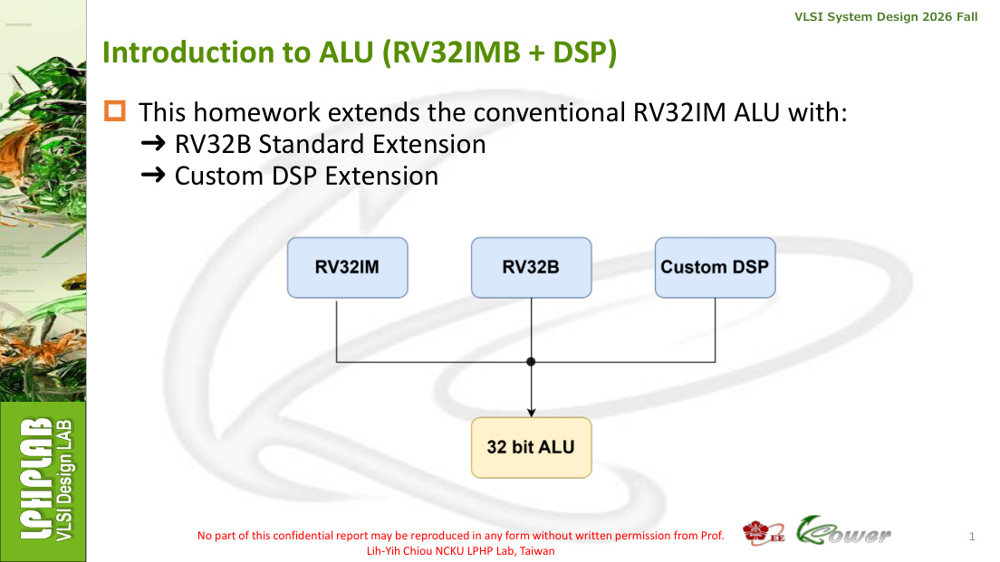
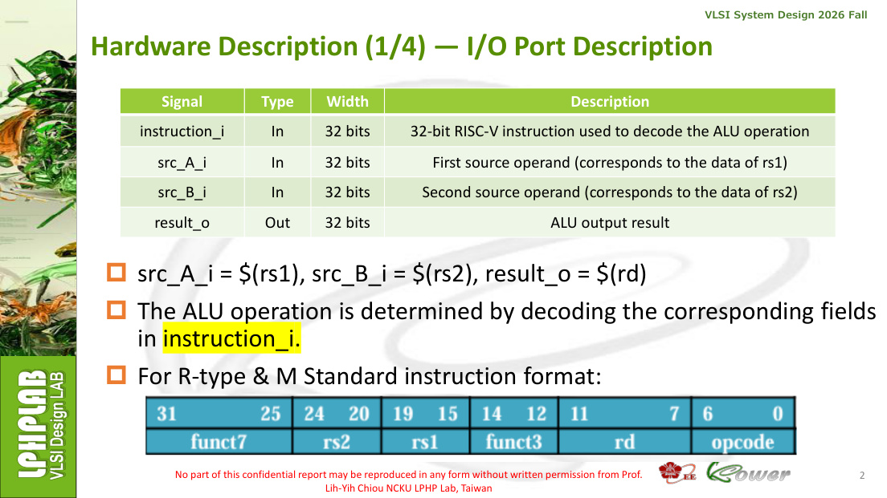
3.1 RV32IM 14 instructions
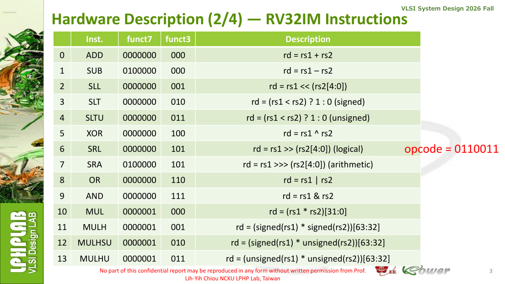
3.2 RV32B 12 instructions
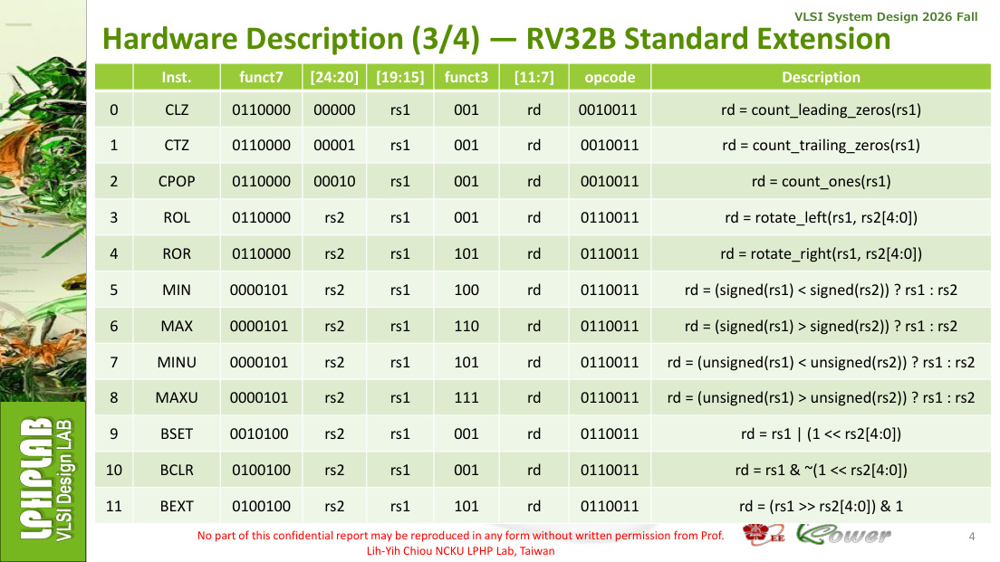
3.3 DSP 5 instructions

程式對照：ALU.sv 先解出 opcode / funct3 / funct7，再依 encoding 進入對應 case。shift amount 使用 src_B_i[4:0]；signed/unsigned comparison 分開；DSP lane 以 signed 8-bit 處理並做 saturation。
展開：ALU.sv 完整程式
module ALU (
input logic [31:0] instruction_i,
input logic [31:0] src_A_i,
input logic [31:0] src_B_i,
output logic [31:0] result_o
);
logic [6:0] opcode, funct7;
logic [2:0] funct3;
integer i;
integer cnt;
integer shamt;
logic signed [63:0] prod_ss;
logic signed [63:0] prod_su;
logic [63:0] prod_uu;
logic signed [31:0] dot_sum;
logic signed [8:0] lane_tmp;
always @* begin
opcode = instruction_i[6:0];
funct3 = instruction_i[14:12];
funct7 = instruction_i[31:25];
shamt = src_B_i[4:0];
result_o = 32'b0;
prod_ss = $signed(src_A_i) * $signed(src_B_i);
prod_su = $signed(src_A_i) * $signed({1'b0,src_B_i});
prod_uu = src_A_i * src_B_i;
dot_sum = 0;
lane_tmp = 0;
if (opcode == 7'b0110011) begin
case (funct7)
7'b0000000: begin
case (funct3)
3'b000: result_o = src_A_i + src_B_i; // ADD
3'b001: result_o = src_A_i << shamt; // SLL
3'b010: result_o = ($signed(src_A_i) < $signed(src_B_i)); // SLT
3'b011: result_o = (src_A_i < src_B_i); // SLTU
3'b100: result_o = src_A_i ^ src_B_i; // XOR
3'b101: result_o = src_A_i >> shamt; // SRL
3'b110: result_o = src_A_i | src_B_i; // OR
3'b111: result_o = src_A_i & src_B_i; // AND
default: result_o = 0;
endcase
end
7'b0100000: begin
case (funct3)
3'b000: result_o = src_A_i - src_B_i; // SUB
3'b101: result_o = $signed(src_A_i) >>> shamt; // SRA
default: result_o = 0;
endcase
end
7'b0000001: begin
case (funct3)
3'b000: result_o = prod_uu[31:0]; // MUL
3'b001: result_o = prod_ss[63:32]; // MULH
3'b010: result_o = prod_su[63:32]; // MULHSU
3'b011: result_o = prod_uu[63:32]; // MULHU
default: result_o = 0;
endcase
end
7'b0110000: begin
case (funct3)
3'b001: result_o = (src_A_i << shamt) | (src_A_i >> ((32-shamt)&31)); // ROL
3'b101: result_o = (src_A_i >> shamt) | (src_A_i << ((32-shamt)&31)); // ROR
default: result_o = 0;
endcase
end
7'b0000101: begin
case (funct3)
3'b100: result_o = ($signed(src_A_i) < $signed(src_B_i)) ? src_A_i : src_B_i; // MIN
3'b110: result_o = ($signed(src_A_i) > $signed(src_B_i)) ? src_A_i : src_B_i; // MAX
3'b101: result_o = (src_A_i < src_B_i) ? src_A_i : src_B_i; // MINU
3'b111: result_o = (src_A_i > src_B_i) ? src_A_i : src_B_i; // MAXU
default: result_o = 0;
endcase
end
7'b0010100: if (funct3==3'b001) result_o = src_A_i | (32'b1 << shamt); // BSET
7'b0100100: begin
if (funct3==3'b001) result_o = src_A_i & ~(32'b1 << shamt); // BCLR
else if (funct3==3'b101) result_o = (src_A_i >> shamt) & 32'b1; // BEXT
end
default: result_o = 0;
endcase
end else if (opcode == 7'b0010011 && funct7 == 7'b0110000 && funct3 == 3'b001) begin
cnt = 0;
if (instruction_i[24:20] == 5'b00000) begin // CLZ
cnt = 32;
for (i=31; i>=0; i=i-1) if (src_A_i[i] && cnt==32) cnt = 31-i;
result_o = cnt;
end else if (instruction_i[24:20] == 5'b00001) begin // CTZ
cnt = 32;
for (i=0; i<32; i=i+1) if (src_A_i[i] && cnt==32) cnt = i;
result_o = cnt;
end else if (instruction_i[24:20] == 5'b00010) begin // CPOP
cnt = 0;
for (i=0; i<32; i=i+1) cnt = cnt + src_A_i[i];
result_o = cnt;
end
end else if (opcode == 7'b0001011 && funct7 == 7'b0000000) begin
case (funct3)
3'b000: begin // DOTP4
dot_sum = $signed(src_A_i[7:0]) * $signed(src_B_i[7:0]) +
$signed(src_A_i[15:8]) * $signed(src_B_i[15:8]) +
$signed(src_A_i[23:16]) * $signed(src_B_i[23:16]) +
$signed(src_A_i[31:24]) * $signed(src_B_i[31:24]);
result_o = dot_sum;
end
3'b001: begin // SADD8
for (i=0; i<4; i=i+1) begin
lane_tmp = $signed(src_A_i[i*8 +: 8]) + $signed(src_B_i[i*8 +: 8]);
if (lane_tmp > 127) result_o[i*8 +: 8] = 8'h7f;
else if (lane_tmp < -128) result_o[i*8 +: 8] = 8'h80;
else result_o[i*8 +: 8] = lane_tmp[7:0];
end
end
3'b010: begin // SSUB8
for (i=0; i<4; i=i+1) begin
lane_tmp = $signed(src_A_i[i*8 +: 8]) - $signed(src_B_i[i*8 +: 8]);
if (lane_tmp > 127) result_o[i*8 +: 8] = 8'h7f;
else if (lane_tmp < -128) result_o[i*8 +: 8] = 8'h80;
else result_o[i*8 +: 8] = lane_tmp[7:0];
end
end
3'b011: begin // ABS
if (src_A_i == 32'h80000000) result_o = 32'h7fffffff;
else if (src_A_i[31]) result_o = (~src_A_i) + 1'b1;
else result_o = src_A_i;
end
3'b100: begin // CLIP8
if ($signed(src_A_i) > 127) result_o = 32'h0000007f;
else if ($signed(src_A_i) < -128) result_o = 32'hffffff80;
else result_o = {{24{src_A_i[7]}},src_A_i[7:0]};
end
default: result_o = 0;
endcase
end
end
endmodule
4. Problem B — FPU：IEEE-754 流程與程式對照
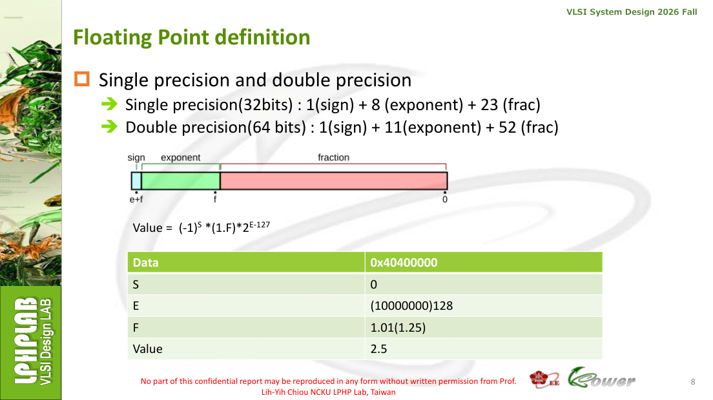
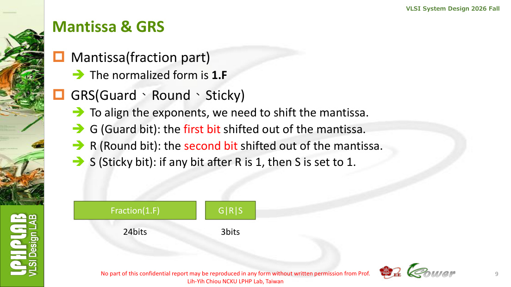
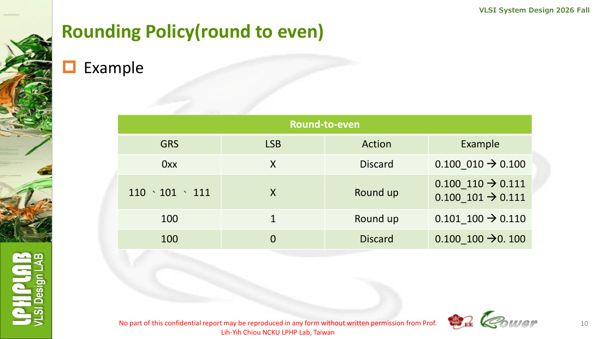
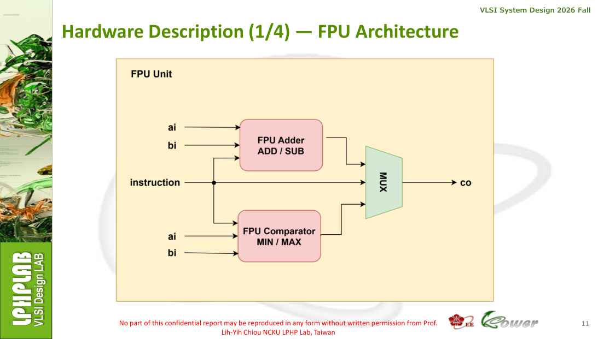
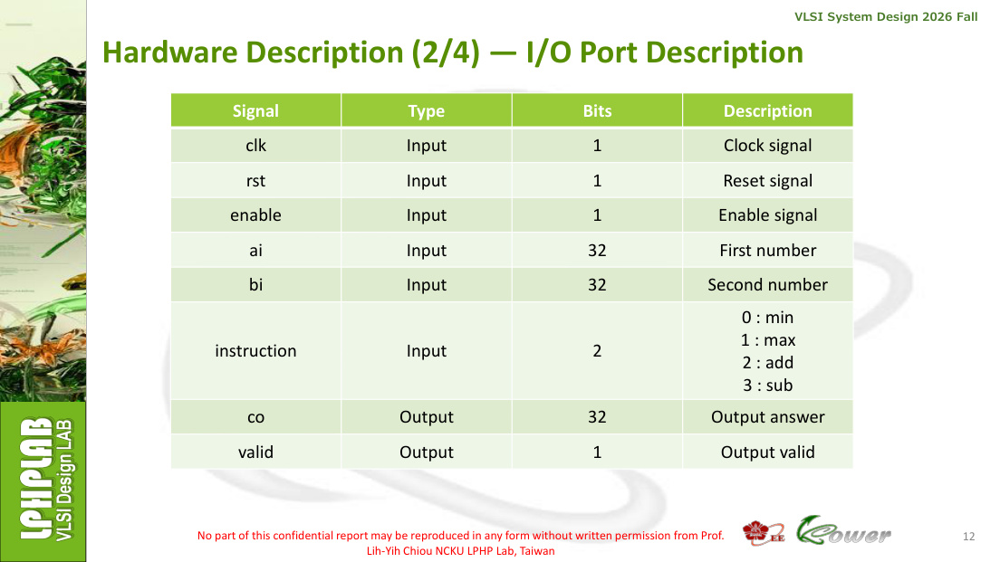
4.1 ADD/SUB 三階段
Unpack
SEF / Special
SEF / Special
→
Align +
Add/Sub
Add/Sub
→
Normalize
+ GRS Round
+ GRS Round
→
Repack
co / valid
co / valid
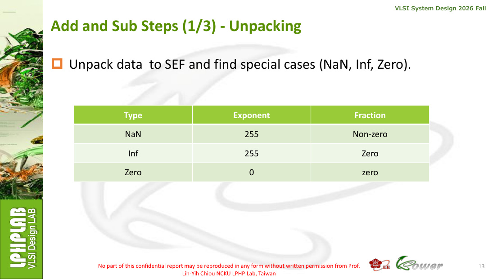
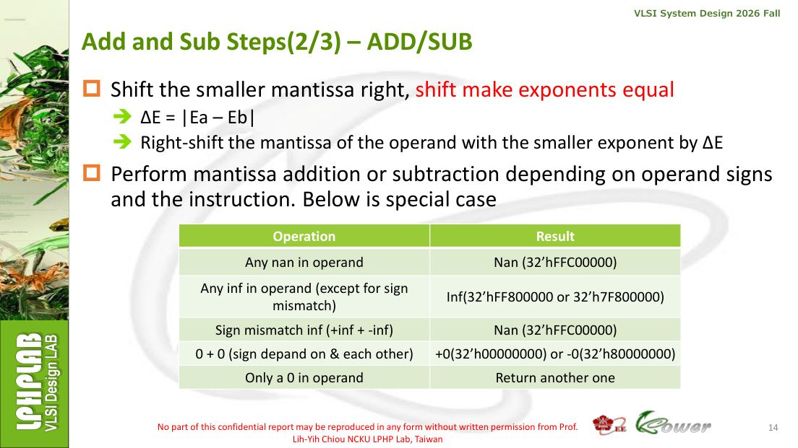

程式對照：fp_minmax() 處理 MIN/MAX、NaN 與 ±0；fp_addsub() 先調整 SUB 的第二運算元符號，再分類 special cases、對齊 exponent、做 significand 加減、normalization、GRS ties-to-even rounding，最後重新封裝 IEEE-754 32-bit 結果。
展開：FPU.sv 完整程式
module FPU(
input logic clk,
input logic rst,
input logic enable,
input logic [1:0] instruction,
input logic [31:0] ai,
input logic [31:0] bi,
output logic [31:0] co,
output logic valid
);
function automatic [31:0] fp_minmax;
input [31:0] a, b;
input is_max;
reg a_nan,b_nan;
begin
a_nan = (&a[30:23]) && (|a[22:0]);
b_nan = (&b[30:23]) && (|b[22:0]);
if (a_nan || b_nan) fp_minmax = 32'hFFC00000;
else if ((a[30:0]==0) && (b[30:0]==0)) begin
if (is_max) fp_minmax = (a[31] & b[31]) ? 32'h80000000 : 32'h00000000;
else fp_minmax = (a[31] | b[31]) ? 32'h80000000 : 32'h00000000;
end else if (a == b) fp_minmax = a;
else if (a[31] != b[31]) begin
if (is_max) fp_minmax = a[31] ? b : a;
else fp_minmax = a[31] ? a : b;
end else if (!a[31]) begin
if (is_max) fp_minmax = (a[30:0] > b[30:0]) ? a : b;
else fp_minmax = (a[30:0] < b[30:0]) ? a : b;
end else begin
if (is_max) fp_minmax = (a[30:0] < b[30:0]) ? a : b;
else fp_minmax = (a[30:0] > b[30:0]) ? a : b;
end
end
endfunction
function automatic [31:0] fp_addsub;
input [31:0] a_in, b_in;
input sub;
reg [31:0] a,b;
reg sa,sb,sr;
reg [7:0] ea,eb;
reg [22:0] fa,fb;
reg a_nan,b_nan,a_inf,b_inf,a_zero,b_zero;
integer exa,exb,er,diff,k;
reg [26:0] ma,mb;
reg [27:0] sum;
reg [26:0] mr;
reg sticky;
reg guardb,roundb,stickyb,lsb,round_up;
reg [24:0] rounded;
begin
a = a_in;
b = b_in;
b[31] = b_in[31] ^ sub;
sa=a[31]; sb=b[31]; ea=a[30:23]; eb=b[30:23]; fa=a[22:0]; fb=b[22:0];
a_nan=(&ea)&&(|fa); b_nan=(&eb)&&(|fb);
a_inf=(&ea)&&(~|fa); b_inf=(&eb)&&(~|fb);
a_zero=(a[30:0]==0); b_zero=(b[30:0]==0);
if (a_nan || b_nan) fp_addsub=32'hFFC00000;
else if (a_inf && b_inf && (sa!=sb)) fp_addsub=32'hFFC00000;
else if (a_inf) fp_addsub={sa,8'hff,23'b0};
else if (b_inf) fp_addsub={sb,8'hff,23'b0};
else if (a_zero && b_zero) fp_addsub={(sa & sb),31'b0};
else if (a_zero) fp_addsub=b;
else if (b_zero) fp_addsub=a;
else begin
exa = (ea==0) ? 1 : ea;
exb = (eb==0) ? 1 : eb;
ma = {(ea!=0),fa,3'b000};
mb = {(eb!=0),fb,3'b000};
er = exa;
if (exa > exb) begin
diff=exa-exb; er=exa;
if (diff >= 27) mb = (mb!=0);
else begin
sticky=0;
for(k=0;k<27;k=k+1) if(k<diff) sticky=sticky|mb[k];
mb=mb>>diff; mb[0]=mb[0]|sticky;
end
end else if (exb > exa) begin
diff=exb-exa; er=exb;
if (diff >= 27) ma = (ma!=0);
else begin
sticky=0;
for(k=0;k<27;k=k+1) if(k<diff) sticky=sticky|ma[k];
ma=ma>>diff; ma[0]=ma[0]|sticky;
end
end
if (sa==sb) begin
sum={1'b0,ma}+{1'b0,mb}; sr=sa;
if(sum[27]) begin
sticky=sum[0];
mr=sum[27:1]; mr[0]=mr[0]|sticky; er=er+1;
end else mr=sum[26:0];
end else begin
if(ma>mb) begin mr=ma-mb; sr=sa; end
else if(mb>ma) begin mr=mb-ma; sr=sb; end
else begin mr=0; sr=0; end
while((mr[26]==0) && (mr!=0) && (er>1)) begin mr=mr<<1; er=er-1; end
end
if(mr==0) fp_addsub=32'h00000000;
else if(er>=255) fp_addsub={sr,8'hff,23'b0};
else begin
// If exponent is at the minimum, hidden bit may be zero (subnormal).
guardb=mr[2]; roundb=mr[1]; stickyb=mr[0]; lsb=mr[3];
round_up=guardb && (roundb || stickyb || lsb);
rounded={1'b0,mr[26:3]} + round_up;
if(rounded[24]) begin rounded=rounded>>1; er=er+1; end
if(er>=255) fp_addsub={sr,8'hff,23'b0};
else if((er==1) && (rounded[23]==0)) fp_addsub={sr,8'h00,rounded[22:0]};
else fp_addsub={sr,er[7:0],rounded[22:0]};
end
end
end
endfunction
reg [31:0] next_result;
always @* begin
case(instruction)
2'd0: next_result = fp_minmax(ai,bi,1'b0);
2'd1: next_result = fp_minmax(ai,bi,1'b1);
2'd2: next_result = fp_addsub(ai,bi,1'b0);
2'd3: next_result = fp_addsub(ai,bi,1'b1);
default: next_result = 32'b0;
endcase
end
always @(posedge clk) begin
if (rst) begin co<=0; valid<=0; end
else begin
valid <= enable;
if(enable) co <= next_result;
end
end
endmodule
5. 已完成的程式與測試檔案
| 檔案 | 用途 | 目前狀態 |
|---|---|---|
| Src/ALU.sv | 31 種 ALU operation RTL | 完成並通過 ModelSim regression |
| Src/FPU.sv | MIN/MAX、ADD/SUB、special case、normalize、GRS | 完成並通過 2000 patterns |
| Src/HW1_lint_top.sv | 整合 ALU/FPU，供 lint hierarchy 預檢 | 完成 |
| Sim/ALU_tb.sv / FPU_tb.sv | Provided pattern simulation | 已執行 |
| Sim/*_hidden_defense_tb.sv | 額外 corner-case defense | 71/71 targeted cases |
| Sim/Superlint.tcl | JasperGold Superlint script | 檔案完成，正式工具待跑 |
HW1_lint_top.sv
module HW1_lint_top(
input logic clk,
input logic rst,
input logic enable,
input logic [1:0] fpu_instruction,
input logic [31:0] instruction_i,
input logic [31:0] src_A_i,
input logic [31:0] src_B_i,
input logic [31:0] ai,
input logic [31:0] bi,
output logic [31:0] alu_result_o,
output logic [31:0] fpu_co,
output logic fpu_valid
);
ALU u_alu(.instruction_i(instruction_i),.src_A_i(src_A_i),.src_B_i(src_B_i),.result_o(alu_result_o));
FPU u_fpu(.clk(clk),.rst(rst),.enable(enable),.instruction(fpu_instruction),.ai(ai),.bi(bi),.co(fpu_co),.valid(fpu_valid));
endmodule
ALU_hidden_defense_tb.sv
`timescale 1ns/1ps
`include "../Src/ALU.sv"
module tb_ALU_hidden_defense;
logic [31:0] instruction_i, src_A_i, src_B_i;
wire [31:0] result_o;
integer total, pass, fail;
ALU dut(.instruction_i(instruction_i),.src_A_i(src_A_i),.src_B_i(src_B_i),.result_o(result_o));
task check;
input [255:0] name;
input [31:0] inst,a,b,exp;
begin
instruction_i=inst; src_A_i=a; src_B_i=b; #1; total=total+1;
if (result_o === exp) begin pass=pass+1; $display("[PASS] %0s",name); end
else begin fail=fail+1; $display("[FAIL] %0s A=%h B=%h GOT=%h EXP=%h",name,a,b,result_o,exp); end
end
endtask
initial begin total=0; pass=0; fail=0;
$display("============================================");
$display(" ALU HIDDEN-TEST DEFENSE");
$display("============================================");
// RV32I boundaries
check("ADD wrap INT_MAX+1",32'h002081b3,32'h7fffffff,32'h00000001,32'h80000000);
check("ADD wrap FFFFFFFF+1",32'h002081b3,32'hffffffff,32'h00000001,32'h00000000);
check("SUB wrap INT_MIN-1",32'h402081b3,32'h80000000,32'h00000001,32'h7fffffff);
check("SLT signed -1 < +1",32'h0020a1b3,32'hffffffff,32'h00000001,32'h00000001);
check("SLTU unsigned FFFFFFFF < 1",32'h0020b1b3,32'hffffffff,32'h00000001,32'h00000000);
check("SLL shamt=0",32'h002091b3,32'h12345678,32'h00000000,32'h12345678);
check("SLL shamt=31",32'h002091b3,32'h00000001,32'h0000001f,32'h80000000);
check("SLL rs2=32 masks to 0",32'h002091b3,32'h12345678,32'h00000020,32'h12345678);
check("SRL rs2=63 masks to 31",32'h0020d1b3,32'h80000000,32'h0000003f,32'h00000001);
check("SRA negative shamt=31",32'h4020d1b3,32'h80000000,32'h0000001f,32'hffffffff);
check("SRA negative shamt=1",32'h4020d1b3,32'h80000000,32'h00000001,32'hc0000000);
// M extension
check("MUL low signed pattern",32'h022081b3,32'hffffffff,32'h00000002,32'hfffffffe);
check("MULH -1 * 2",32'h022091b3,32'hffffffff,32'h00000002,32'hffffffff);
check("MULHSU -1 * FFFFFFFF",32'h0220a1b3,32'hffffffff,32'hffffffff,32'hffffffff);
check("MULHU max*max",32'h0220b1b3,32'hffffffff,32'hffffffff,32'hfffffffe);
// unary bit-count
check("CLZ zero",32'h60009193,32'h00000000,32'h00000000,32'h00000020);
check("CLZ MSB",32'h60009193,32'h80000000,32'h00000000,32'h00000000);
check("CTZ zero",32'h60109193,32'h00000000,32'h00000000,32'h00000020);
check("CTZ bit31",32'h60109193,32'h80000000,32'h00000000,32'h0000001f);
check("CPOP zero",32'h60209193,32'h00000000,32'h00000000,32'h00000000);
check("CPOP all ones",32'h60209193,32'hffffffff,32'h00000000,32'h00000020);
// rotate / minmax / bit ops
check("ROL shamt=0",32'h602091b3,32'h89abcdef,32'h00000000,32'h89abcdef);
check("ROL shamt=31",32'h602091b3,32'h00000001,32'h0000001f,32'h80000000);
check("ROR shamt=0",32'h6020d1b3,32'h89abcdef,32'h00000000,32'h89abcdef);
check("ROR shamt=31",32'h6020d1b3,32'h00000001,32'h0000001f,32'h00000002);
check("MIN signed INT_MIN",32'h0a20c1b3,32'h80000000,32'h7fffffff,32'h80000000);
check("MAX signed",32'h0a20e1b3,32'hffffffff,32'h00000001,32'h00000001);
check("MINU unsigned",32'h0a20d1b3,32'hffffffff,32'h00000001,32'h00000001);
check("MAXU unsigned",32'h0a20f1b3,32'hffffffff,32'h00000001,32'hffffffff);
check("BSET bit31",32'h282091b3,32'h00000000,32'h0000001f,32'h80000000);
check("BCLR bit31",32'h482091b3,32'hffffffff,32'h0000001f,32'h7fffffff);
check("BEXT bit31",32'h4820d1b3,32'h80000000,32'h0000001f,32'h00000001);
// custom DSP
check("DOTP4 all +1",32'h0020818b,32'h01010101,32'h01010101,32'h00000004);
check("DOTP4 all -128",32'h0020818b,32'h80808080,32'h80808080,32'h00010000);
check("SADD8 positive saturation",32'h0020918b,32'h7f7f7f7f,32'h01010101,32'h7f7f7f7f);
check("SADD8 negative saturation",32'h0020918b,32'h80808080,32'hffffffff,32'h80808080);
check("SSUB8 positive saturation",32'h0020a18b,32'h7f7f7f7f,32'hffffffff,32'h7f7f7f7f);
check("SSUB8 negative saturation",32'h0020a18b,32'h80808080,32'h01010101,32'h80808080);
check("ABS zero",32'h0000b18b,32'h00000000,32'h00000000,32'h00000000);
check("ABS -1",32'h0000b18b,32'hffffffff,32'h00000000,32'h00000001);
check("ABS INT_MIN saturates",32'h0000b18b,32'h80000000,32'h00000000,32'h7fffffff);
check("CLIP8 +128",32'h0000c18b,32'h00000080,32'h00000000,32'h0000007f);
check("CLIP8 -129",32'h0000c18b,32'hffffff7f,32'h00000000,32'hffffff80);
check("CLIP8 -1",32'h0000c18b,32'hffffffff,32'h00000000,32'hffffffff);
$display("============================================");
$display("TOTAL=%0d PASS=%0d FAIL=%0d",total,pass,fail);
if(fail==0) $display("ALL ALU DEFENSE TESTS PASS"); else $display("ALU DEFENSE HAS FAILURES");
$display("============================================"); $finish;
end
endmodule
FPU_hidden_defense_tb.sv
`timescale 1ns/1ps
`include "../Src/FPU.sv"
module tb_FPU_hidden_defense;
logic clk,rst,enable; logic [1:0] instruction; logic [31:0] ai,bi; wire [31:0] co; wire valid;
integer total,pass,fail;
FPU dut(.clk(clk),.rst(rst),.enable(enable),.instruction(instruction),.ai(ai),.bi(bi),.co(co),.valid(valid));
initial begin clk=0; forever #5 clk=~clk; end
task check;
input [255:0] name; input [1:0] op; input [31:0] a,b,exp;
begin
@(negedge clk); instruction=op; ai=a; bi=b; enable=1;
@(posedge clk); #1;
if(valid!==1'b1) begin total=total+1; fail=fail+1; $display("[FAIL] %0s valid=%b expected=1",name,valid); end
else begin total=total+1; if(co===exp) begin pass=pass+1; $display("[PASS] %0s",name); end
else begin fail=fail+1; $display("[FAIL] %0s A=%h B=%h GOT=%h EXP=%h",name,a,b,co,exp); end end
@(negedge clk); enable=0;
end
endtask
initial begin
total=0;pass=0;fail=0; enable=0; instruction=0; ai=0;bi=0; rst=1;
repeat(2) @(posedge clk); @(negedge clk); rst=0;
$display("============================================"); $display(" FPU HIDDEN-TEST DEFENSE"); $display("============================================");
// ADD (2)
check("ADD 1.0 + 1.0",2,32'h3f800000,32'h3f800000,32'h40000000);
check("ADD cancellation 1 + -1",2,32'h3f800000,32'hbf800000,32'h00000000);
check("ADD +Inf + -Inf => NaN",2,32'h7f800000,32'hff800000,32'hffc00000);
check("ADD NaN canonical",2,32'h7fc00001,32'h3f800000,32'hffc00000);
check("ADD +0 + -0 => +0",2,32'h00000000,32'h80000000,32'h00000000);
check("ADD -0 + -0 => -0",2,32'h80000000,32'h80000000,32'h80000000);
check("ADD zero passthrough",2,32'h00000000,32'hbf800000,32'hbf800000);
check("ADD overflow => +Inf",2,32'h7f7fffff,32'h7f7fffff,32'h7f800000);
check("ADD smallest subnormals",2,32'h00000001,32'h00000001,32'h00000002);
check("ADD tie-even keep even",2,32'h3f800000,32'h33800000,32'h3f800000);
check("ADD tie-even round odd up",2,32'h3f800001,32'h33800000,32'h3f800002);
// SUB (3)
check("SUB 1.0 - 1.0",3,32'h3f800000,32'h3f800000,32'h00000000);
check("SUB 1.0 - -1.0",3,32'h3f800000,32'hbf800000,32'h40000000);
check("SUB +Inf - +Inf => NaN",3,32'h7f800000,32'h7f800000,32'hffc00000);
check("SUB +Inf - -Inf => +Inf",3,32'h7f800000,32'hff800000,32'h7f800000);
check("SUB +0 - +0 => +0",3,32'h00000000,32'h00000000,32'h00000000);
check("SUB -0 - +0 => -0",3,32'h80000000,32'h00000000,32'h80000000);
// MIN (0) / MAX (1)
check("MIN +0,-0 => -0",0,32'h00000000,32'h80000000,32'h80000000);
check("MAX +0,-0 => +0",1,32'h00000000,32'h80000000,32'h00000000);
check("MIN -2,+1",0,32'hc0000000,32'h3f800000,32'hc0000000);
check("MAX -2,+1",1,32'hc0000000,32'h3f800000,32'h3f800000);
check("MIN two negatives",0,32'hc0400000,32'hc0000000,32'hc0400000);
check("MAX two negatives",1,32'hc0400000,32'hc0000000,32'hc0000000);
check("MIN NaN canonical",0,32'h7fc12345,32'h3f800000,32'hffc00000);
check("MAX NaN canonical",1,32'h3f800000,32'hffc12345,32'hffc00000);
// protocol: valid should follow enable on next sampled clock
@(negedge clk); enable=0; ai=32'h3f800000; bi=32'h3f800000; instruction=2;
@(posedge clk); #1; total=total+1; if(valid===0) begin pass=pass+1;$display("[PASS] valid low when enable low");end else begin fail=fail+1;$display("[FAIL] valid low when enable low");end
@(negedge clk); rst=1; @(posedge clk); #1; total=total+1; if(valid===0 && co===0) begin pass=pass+1;$display("[PASS] reset clears valid/co");end else begin fail=fail+1;$display("[FAIL] reset valid=%b co=%h",valid,co);end rst=0;
$display("============================================"); $display("TOTAL=%0d PASS=%0d FAIL=%0d",total,pass,fail);
if(fail==0) $display("ALL FPU DEFENSE TESTS PASS"); else $display("FPU DEFENSE HAS FAILURES - inspect first FAIL before editing RTL");
$display("============================================"); $finish;
end
endmodule
Superlint.tcl
clear -all analyze -sv ../Src/ALU.sv ../Src/FPU.sv ../Src/HW1_lint_top.sv elaborate -top HW1_lint_top clock clk reset rst check_superlint -extract
6. 已完成驗證結果：從功能模擬到本機交叉預檢
6.1 ModelSim — 功能正確性基準
| 模組 | 測試 | 結果 |
|---|---|---|
| ALU | Provided | Instruction 0～30 ALL PASS |
| ALU | Defense | 44 / 44 PASS |
| FPU | Provided | TOTAL=2000 PASS=2000 FAIL=0 |
| FPU | Defense | 27 / 27 PASS |
ALU：Simulation PASS!! / Instruction 0 ~ 30 ALL PASS FPU：TOTAL=2000 PASS=2000 FAIL=0 ALU Defense：TOTAL=44 PASS=44 FAIL=0 FPU Defense：TOTAL=27 PASS=27 FAIL=0
6.2 Yosys
ALU parsing / hierarchy / synthesis 完成，CHECK = 0 problems；另記錄 i/cnt 相關 3 個 latch warnings。FPU 在 fp_addsub runtime function elaboration 遇到 Yosys frontend constant-argument limitation，因此不以此判定 FPU 功能錯誤。
6.3 Verilator
ALU module lint 記錄 6 個 width/unused warnings；FPU 記錄 4 個 width warnings。HW1_lint_top 三檔整合可完整 elaboration；使用 -Wno-fatal 後成功跑至 Verilation Report，保留 10 warnings，未出現真正 fatal error。
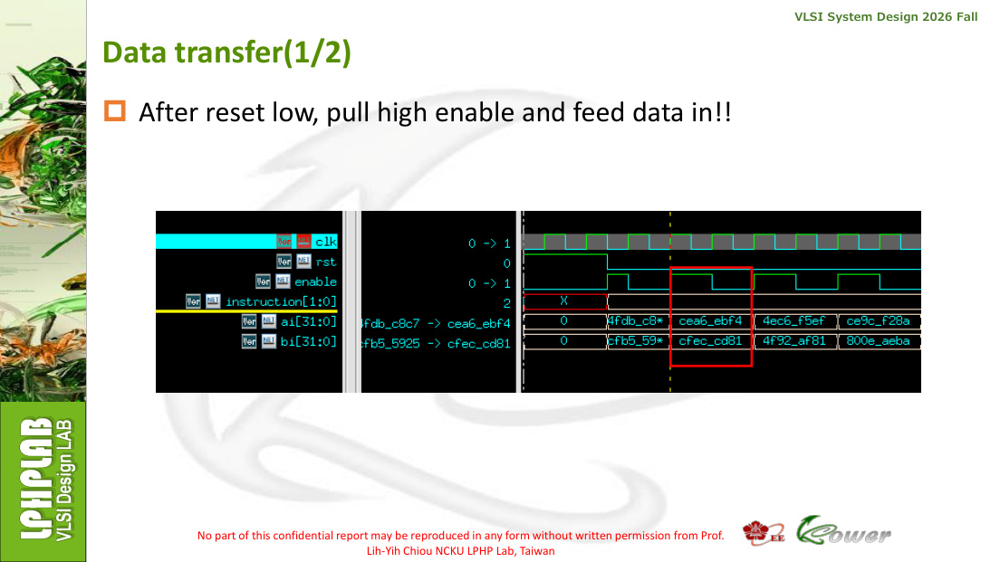
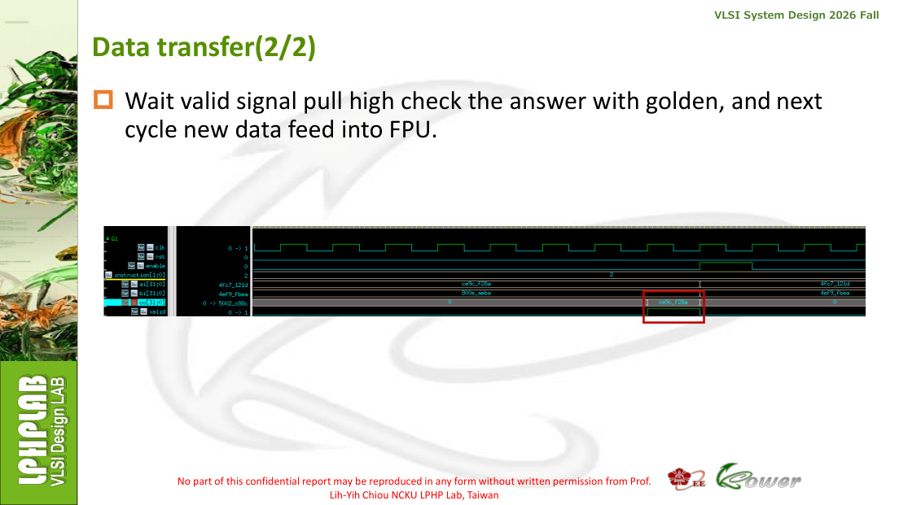
7. 從拿到作業到現在：完整流程圖
① 讀 HW1
拆規格
拆規格
→
② ALU.sv
31 instructions
31 instructions
→
③ FPU.sv
IEEE-754
IEEE-754
→
④ ModelSim
Provided PASS
Provided PASS
→
⑤ Defense
71/71
71/71
→
⑥ Yosys
Cross-check
Cross-check
→
⑦ Verilator
Lint/Elab
Lint/Elab
→
⑧ VCS
SoC Lab
SoC Lab
→
⑨ JasperGold
Superlint
Superlint
→
⑩ Report
tar / Moodle
tar / Moodle
Step 1 — 規格：依投影片整理 ALU 31 instructions 與 FPU IEEE-754 要求。
Step 2 — RTL：完成 ALU.sv、FPU.sv；再建立 lint wrapper。
Step 3 — Provided simulation：ModelSim 編譯 0 error / 0 warning，ALU/FPU 官方 patterns 通過。
Step 4 — Defense：加入 shift、signedness、saturation、NaN/Inf/±0/subnormal/tie-even 等邊界案例。
Step 5 — Local cross-check：Yosys + Verilator，將功能、synthesis、lint 三種問題分開判讀。
Step 6 — 現在：鎖定 RTL，準備移到 SoC Lab 執行課程指定 VCS / JasperGold。
8. 尚未完成的地方與下一步
| 順序 | 工作 | 要做什麼 | 完成判準 |
|---|---|---|---|
| 1 | VCS ALU | vcs -R -full64 -sverilog ALU_tb.sv -debug_access+all +define+FSDB | 正式 SoC Lab simulation PASS |
| 2 | VCS FPU | 以課程指定 FPU command 執行 | 2000 patterns 在 VCS 亦 PASS |
| 3 | JasperGold Superlint | jg -superlint superlint.tcl，比對 Yosys/Verilator warnings | 取得正式 lint / coverage 結果 |
| 4 | 必要修正 + regression | 只有 JasperGold 證實需要時才最小化修改 | 修改後 ModelSim + VCS 全部重跑 PASS |
| 5 | Final Report | 補 VCS、Superlint 真實截圖與結果 | 輸出 StudentID.pdf |
| 6 | Final hierarchy | 只保留老師要求檔案，避免 work/log/本機輔助檔混入 | hierarchy 與 Moodle 規範一致 |
| 7 | .tar | tar -cvf StudentID_HW1.tar StudentID_HW1 並用 tar -tf 檢查 | 可正常解包、重新 compile/simulate |
特別注意：老師投影片的 hierarchy 頁使用 HW1_StudentID 命名，而後面的壓縮指令/範例使用 StudentID_HW1。最終打包前應以 Moodle、TA 最新公告或提供模板確認實際命名，避免格式扣分。
9. 原完成 HTML：Local Verification Record（內插保存）
以下將你先前完成的 HTML 原始內容以可展開形式內插到本整合報告中，方便保留原始驗證紀錄；上方主體則已重新整理成「題目—程式—結果—流程—待辦」的報告結構。
展開原 HTML 原始碼
<!DOCTYPE html>
<html lang="zh-Hant">
<head>
<meta charset="utf-8">
<meta name="viewport" content="width=device-width,initial-scale=1">
<title>VSD HW1 本機驗證：ModelSim / Yosys / Verilator 完整流程與結果分析</title>
<style>
:root{--bg:#f5f7fb;--card:#fff;--ink:#172033;--muted:#667085;--line:#dbe2ea;--ok:#067647;--warn:#b54708;--bad:#b42318;--blue:#175cd3;--code:#101828}
*{box-sizing:border-box} body{margin:0;background:var(--bg);color:var(--ink);font-family:"Noto Sans TC","Microsoft JhengHei",Arial,sans-serif;line-height:1.75}
header{background:linear-gradient(135deg,#101828,#344054);color:#fff;padding:42px 20px}
.wrap{max-width:1120px;margin:auto}.kicker{opacity:.75;letter-spacing:.08em}.title{font-size:32px;font-weight:800;margin:5px 0}.sub{opacity:.88}
main{padding:24px 16px 60px}.card{background:var(--card);border:1px solid var(--line);border-radius:16px;padding:24px;margin:18px 0;box-shadow:0 3px 14px #1018280a}
h2{margin-top:0;border-bottom:2px solid #e8eef8;padding-bottom:9px} h3{margin-top:26px}.ok{color:var(--ok);font-weight:700}.warn{color:var(--warn);font-weight:700}.bad{color:var(--bad);font-weight:700}
code{font-family:Consolas,monospace} pre{background:var(--code);color:#e6edf3;padding:16px;border-radius:11px;overflow:auto;white-space:pre-wrap;line-height:1.5}
table{border-collapse:collapse;width:100%;margin:14px 0} th,td{border:1px solid var(--line);padding:10px;vertical-align:top} th{background:#f0f4fa;text-align:left}
.note{border-left:5px solid var(--blue);background:#eff6ff;padding:12px 16px;border-radius:8px}.warning{border-left-color:#f79009;background:#fffaeb}.success{border-left-color:#12b76a;background:#ecfdf3}
.flow{display:flex;flex-wrap:wrap;gap:10px;align-items:center;justify-content:center;padding:20px 5px}
.node{min-width:145px;text-align:center;padding:14px 12px;border-radius:12px;border:2px solid #84adff;background:#eff4ff;font-weight:700}
.node.done{border-color:#6ce9a6;background:#ecfdf3}.node.wait{border-color:#fec84b;background:#fffaeb}.arrow{font-size:26px;color:#667085}
.small{font-size:.92em;color:var(--muted)} .toc a{color:#175cd3;text-decoration:none}.toc li{margin:4px 0}
.badge{display:inline-block;padding:2px 8px;border-radius:999px;background:#ecfdf3;color:#067647;font-size:.85em;font-weight:700}
footer{text-align:center;color:#667085;padding:22px}
</style>
</head>
<body>
<header><div class="wrap"><div class="kicker">VSD HW1 VERIFICATION RECORD</div><div class="title">ModelSim → Yosys → Verilator：完整測試流程、指令與結果解析</div>
<div class="sub">目前狀態：Windows 本機預驗證完成；正式 VCS / JasperGold Superlint 待回 SoC Lab 執行。RTL 暫不修改。</div></div></header>
<main class="wrap">
<section class="card" id="flow">
<h2>0. 整體測試驗證流程圖</h2>
<div class="flow">
<div class="node done">① ModelSim<br>功能模擬<br>PASS</div><div class="arrow">→</div>
<div class="node done">② Yosys<br>合成/結構預檢<br>完成</div><div class="arrow">→</div>
<div class="node done">③ Verilator<br>Lint/Elaboration<br>完成</div><div class="arrow">→</div>
<div class="node wait">④ VCS<br>正式模擬<br>待 SoC Lab</div><div class="arrow">→</div>
<div class="node wait">⑤ JasperGold<br>Superlint<br>待 SoC Lab</div><div class="arrow">→</div>
<div class="node wait">⑥ Report / hierarchy<br>.tar / submission</div>
</div>
<pre>功能正確性
│
├─ ModelSim：Provided + Hidden Defense
│
├─ Yosys：RTL parsing / hierarchy / synthesis / check
│
├─ Verilator：ALU / FPU / HW1_lint_top 靜態 lint + elaboration
│
└─ 回學校後：VCS → JasperGold Superlint → 必要時修 RTL → Regression
↓
Report → hierarchy → .tar</pre>
<div class="note success"><b>核心原則：</b>ModelSim 已有完整功能測試通過；Yosys、Verilator 是本機「額外交叉預檢」，不能取代課程指定的 VCS 與 JasperGold。現在不因單一工具 warning 隨意修改已通過 regression 的 ALU.sv / FPU.sv。</div>
</section>
<section class="card toc"><h2>1. 文件導覽</h2>
<ol><li><a href="#baseline">ModelSim 功能驗證基準</a></li><li><a href="#env">OSS CAD Suite / Yosys 環境</a></li><li><a href="#yosys-alu">Yosys：ALU</a></li><li><a href="#yosys-fpu">Yosys：FPU 與 fp_addsub</a></li><li><a href="#verilator-env">Verilator 啟動問題與修正</a></li><li><a href="#verilator-alu">Verilator：ALU lint</a></li><li><a href="#verilator-fpu">Verilator：FPU lint</a></li><li><a href="#wrapper">HW1_lint_top 整合 lint</a></li><li><a href="#summary">總結與後續正式流程</a></li></ol></section>
<section class="card" id="baseline">
<h2>2. ModelSim：功能驗證基準</h2>
<p>在進入 Yosys / Verilator 前，HW1 已先以 ModelSim 完成功能驗證。這是目前判斷 RTL 功能是否正確的重要基準。</p>
<table><tr><th>模組</th><th>測試</th><th>結果</th></tr>
<tr><td>ALU</td><td>Provided tests</td><td class="ok">ALL PASS</td></tr>
<tr><td>ALU</td><td>Hidden Defense</td><td class="ok">44 / 44 PASS</td></tr>
<tr><td>FPU</td><td>Provided tests</td><td class="ok">2000 / 2000 PASS</td></tr>
<tr><td>FPU</td><td>Hidden Defense</td><td class="ok">27 / 27 PASS</td></tr></table>
<p><b>解析：</b>因此後續 Yosys 或 Verilator 若出現工具支援限制或 lint warning，不能直接推論成「功能錯誤」。要區分 simulation correctness、synthesizability、lint/style 三種不同問題。</p>
</section>
<section class="card" id="env"><h2>3. Windows 本機 OSS CAD Suite / Yosys 環境</h2>
<p>專案工作目錄：</p><pre>E:\StudentID_HW1\0917\StudentID_HW1</pre>
<p>OSS CAD Suite：</p><pre>E:\oss-cad-suite-windows-x64-20260914\oss-cad-suite</pre>
<p>每個新的 PowerShell session 先初始化：</p>
<pre>Set-ExecutionPolicy -Scope Process -ExecutionPolicy Bypass
E:\oss-cad-suite-windows-x64-20260914\oss-cad-suite\environment.ps1</pre>
<p>確認 Yosys：</p><pre>where.exe yosys
yosys -V</pre>
<p>實測版本：</p><pre>Yosys 0.69+24 (git sha1 d0e71cfb7-dirty ...)</pre>
</section>
<section class="card" id="yosys-alu"><h2>4. Yosys：ALU parsing → hierarchy → synthesis → check</h2>
<h3>4.1 先做 SystemVerilog parsing 與 hierarchy</h3>
<pre>yosys -p "read_verilog -sv Src/ALU.sv; hierarchy -check -top ALU"</pre>
<p class="ok">結果：PASS。ALU 可被 Yosys 正常解析，top module 正確。</p>
<h3>4.2 完整 synthesis + stat</h3>
<pre>yosys -p "read_verilog -sv Src/ALU.sv; hierarchy -check -top ALU; synth -top ALU; stat"</pre>
<p>重要結果：</p>
<pre>Checking module ALU...
Found and reported 0 problems.
Warnings: 3 unique messages, 3 total</pre>
<p>3 個 warning 為：</p>
<pre>Latch inferred for signal `\ALU.\i'
Latch inferred for signal `\ALU.\cnt [5:0]'
Latch inferred for signal `\ALU.\cnt [31:6]'</pre>
<p><b>解析：</b>Yosys 的 synthesis 本身完成，而且最後 CHECK 為 0 problems。warning 集中在程序內部的 <code>i</code> / <code>cnt</code>，並非直接指出 <code>result_o</code> latch。之後 Verilator 也沒有報同樣 latch warning，因此先記錄、待 JasperGold 正式判讀，不在此時修改 ALU。</p>
</section>
<section class="card" id="yosys-fpu"><h2>5. Yosys：FPU parsing 與 fp_addsub 限制</h2>
<h3>5.1 FPU hierarchy 預檢</h3>
<pre>yosys -p "read_verilog -sv Src/FPU.sv; hierarchy -check -top FPU"</pre>
<p>結果：</p><pre>Src/FPU.sv:126: ERROR: Function \fp_addsub can only be called with constant arguments.</pre>
<p>第 126/127 行的呼叫為：</p>
<pre>2'd2: next_result = fp_addsub(ai,bi,1'b0);
2'd3: next_result = fp_addsub(ai,bi,1'b1);</pre>
<p>進一步檢查 function：</p>
<pre>Select-String -Path Src\FPU.sv -Pattern "function.*fp_addsub" -Context 0,80</pre>
<p>其中可見 runtime-dependent normalization：</p>
<pre>while((mr[26]==0) && (mr!=0) && (er>1)) begin
mr=mr<<1;
er=er-1;
end</pre>
<h3>5.2 AST 交叉確認</h3>
<pre>yosys -p "read_verilog -sv -dump_ast1 Src/FPU.sv" 2>&1 | Select-String -Pattern "fp_addsub|while|ERROR" -Context 2,2</pre>
<p>AST 可辨識 <code>AST_FUNCTION fp_addsub</code>、<code>AST_WHILE</code>，並在以 runtime <code>ai/bi</code> 呼叫 function 時報 constant-argument error。</p>
<div class="note warning"><b>結論：</b>這裡應記錄為 Yosys frontend/elaboration 對此 function procedural constructs 的限制；AST 顯示 while 與此限制高度相關，但不應宣稱已證明「唯一原因」就是 while。由於 ModelSim FPU 全部通過，且後續 Verilator 能完整解析 FPU，因此沒有依據為了 Yosys 而修改 FPU。</div>
</section>
<section class="card" id="verilator-env"><h2>6. Verilator：啟動問題與環境修正</h2>
<p>先確認：</p><pre>verilator --version
where.exe verilator</pre>
<p><code>where.exe</code> 找到：</p><pre>E:\oss-cad-suite-windows-x64-20260914\oss-cad-suite\bin\verilator</pre>
<p>檢查後發現它是 Perl wrapper：</p><pre>Get-Content (where.exe verilator) -First 5
# 第一行：
#!/usr/bin/env perl</pre>
<p>但 Windows session 無 Perl：</p><pre>where.exe perl
# 找不到</pre>
<p>搜尋實際 binary：</p><pre>Get-ChildItem E:\oss-cad-suite-windows-x64-20260914\oss-cad-suite\bin\*verilator*</pre>
<p>找到 <code>verilator_bin.exe</code>，版本：</p>
<pre>verilator_bin.exe --version
Verilator 5.053 devel rev v5.052-80-g0bad0faca (mod)</pre>
<h3>6.1 修正 VERILATOR_ROOT</h3>
<p>第一次 lint 找不到內建檔案 <code>verilated_std.sv</code>。先定位：</p>
<pre>Get-ChildItem E:\oss-cad-suite-windows-x64-20260914\oss-cad-suite -Recurse -Filter verilated_std.sv | Select-Object -ExpandProperty FullName</pre>
<p>實際位置：</p><pre>E:\oss-cad-suite-windows-x64-20260914\oss-cad-suite\share\verilator\include\verilated_std.sv</pre>
<p>設定：</p><pre>$env:VERILATOR_ROOT="E:\oss-cad-suite-windows-x64-20260914\oss-cad-suite\share\verilator"
echo $env:VERILATOR_ROOT</pre>
<p class="ok">設定後 Verilator 可以正常進入真正的 RTL lint。</p>
</section>
<section class="card" id="verilator-alu"><h2>7. Verilator：ALU lint</h2>
<pre>verilator_bin.exe --lint-only -Wall --top-module ALU Src/ALU.sv</pre>
<table><tr><th>類型</th><th>位置</th><th>內容</th><th>解析</th></tr>
<tr><td>WIDTHEXPAND</td><td>ALU.sv:22</td><td><code>shamt = src_B_i[4:0]</code></td><td>5-bit RHS 指派給較寬的 shamt</td></tr>
<tr><td>WIDTHEXPAND</td><td>ALU.sv:36</td><td>signed compare → result_o</td><td>比較結果 1 bit 擴展至 32 bit</td></tr>
<tr><td>WIDTHEXPAND</td><td>ALU.sv:37</td><td>unsigned compare → result_o</td><td>比較結果 1 bit 擴展至 32 bit</td></tr>
<tr><td>UNUSEDSIGNAL</td><td>ALU.sv:2</td><td>instruction_i 部分 bits</td><td>部分 instruction fields 未被 ALU 使用</td></tr>
<tr><td>UNUSEDSIGNAL</td><td>ALU.sv:12</td><td>prod_ss[31:0]</td><td>低 32 bits 未使用</td></tr>
<tr><td>UNUSEDSIGNAL</td><td>ALU.sv:13</td><td>prod_su[31:0]</td><td>低 32 bits 未使用</td></tr></table>
<p>第一次結尾：</p><pre>%Error: Exiting due to 6 warning(s)</pre>
<p><b>注意：</b>這不是 6 個功能性 error，而是 Verilator 將 warning 視為 fatal exit。真正內容是 6 warnings。更重要的是，Verilator 沒有重現 Yosys 的 <code>i/cnt</code> latch warnings，因此必須等 JasperGold 再交叉判讀。</p>
</section>
<section class="card" id="verilator-fpu"><h2>8. Verilator：FPU lint</h2>
<pre>verilator_bin.exe --lint-only -Wall --top-module FPU Src/FPU.sv</pre>
<table><tr><th>位置</th><th>Warning</th><th>原因</th></tr>
<tr><td>FPU.sv:69</td><td>WIDTHEXPAND</td><td><code>exa = (ea==0) ? 1 : ea</code>：8-bit ea 與 integer/32-bit context</td></tr>
<tr><td>FPU.sv:70</td><td>WIDTHEXPAND</td><td><code>exb = (eb==0) ? 1 : eb</code></td></tr>
<tr><td>FPU.sv:76</td><td>WIDTHEXPAND</td><td><code>mb = (mb!=0)</code>：1-bit comparison result → 27-bit mb</td></tr>
<tr><td>FPU.sv:84</td><td>WIDTHEXPAND</td><td><code>ma = (ma!=0)</code>：1-bit comparison result → 27-bit ma</td></tr></table>
<p>第一次結尾：</p><pre>%Error: Exiting due to 4 warning(s)</pre>
<p><b>關鍵解析：</b>Verilator 能完整解析 FPU，包括 <code>fp_addsub</code> 與其 procedural while；因此 Yosys 的 constant-argument error 並非跨工具共同的 SystemVerilog syntax/elaboration failure。這是重要的交叉驗證。</p>
</section>
<section class="card" id="wrapper"><h2>9. 正式 wrapper：HW1_lint_top 整合 lint</h2>
<p>正式 JasperGold Tcl 的架構是同時 analyze 三個 RTL，再以 <code>HW1_lint_top</code> elaboration。因此本機用 Verilator 做相同 hierarchy 的預檢：</p>
<pre>verilator_bin.exe --lint-only -Wall --top-module HW1_lint_top Src/ALU.sv Src/FPU.sv Src/HW1_lint_top.sv</pre>
<p>得到：</p><pre>HW1_lint_top
├── u_alu : ALU
│ ├── WIDTHEXPAND × 3
│ └── UNUSEDSIGNAL × 3
└── u_fpu : FPU
└── WIDTHEXPAND × 4
Total warnings = 10</pre>
<p>沒有出現新的 wrapper port mismatch、missing module、multiple-driver 或 syntax 類問題。</p>
<h3>9.1 讓 warnings 保留，但不要 fatal exit</h3>
<pre>verilator_bin.exe --lint-only -Wall -Wno-fatal --top-module HW1_lint_top Src/ALU.sv Src/FPU.sv Src/HW1_lint_top.sv</pre>
<p>最終完整跑到：</p>
<pre>- V e r i l a t i o n R e p o r t: Verilator 5.053 devel rev v5.052-80-g0bad0faca (mod)
- Verilator: Built from 0.099 MB sources in 5 modules, into 0.364 MB in 3 C++ files needing 0.000 MB
- Verilator: Walltime 0.038 s (elab=0.003, cvt=0.024, bld=0.000); cpu 0.000 s on 1 threads; allocated 18.973 MB</pre>
<div class="note success"><b>最終判讀：</b>使用 <code>-Wno-fatal</code> 後，10 個 warning 仍完整顯示，但流程成功跑到 Verilation Report，沒有真正的 <code>%Error</code>。因此三檔 wrapper hierarchy 的 Verilator lint/elaboration 可視為完成。</div>
</section>
<section class="card" id="summary"><h2>10. 本機驗證總結</h2>
<table><tr><th>工具 / 階段</th><th>ALU</th><th>FPU</th><th>判讀</th></tr>
<tr><td>ModelSim</td><td class="ok">Provided PASS；Hidden 44/44</td><td class="ok">2000/2000；Hidden 27/27</td><td>功能 regression 通過</td></tr>
<tr><td>Yosys parsing/hierarchy</td><td class="ok">PASS</td><td class="warn">fp_addsub frontend limitation</td><td>FPU 不因此判為功能錯誤</td></tr>
<tr><td>Yosys synthesis/check</td><td class="ok">Synthesis PASS；CHECK 0 problems</td><td>未進行 synth</td><td>ALU 有 i/cnt 三個 latch warnings</td></tr>
<tr><td>Verilator module lint</td><td class="warn">6 warnings</td><td class="warn">4 warnings</td><td>無獨立 syntax/elaboration failure</td></tr>
<tr><td>Verilator HW1_lint_top</td><td colspan="2" class="ok">完整 elaboration；10 warnings；-Wno-fatal 後跑至 Verilation Report</td><td>wrapper 整合無新增問題類型</td></tr></table>
<h3>10.1 現在是否要修改 RTL？</h3>
<p><b>目前不建議。</b>原因是 ModelSim 功能 regression 已全部通過；Yosys 與 Verilator 對部分項目的判讀不同；真正課程要求的 VCS / JasperGold 尚未執行。最安全做法是先鎖定目前 RTL，等 JasperGold Superlint 的正式訊息再決定是否修正 width、unused 或 latch 類問題。</p>
<h3>10.2 回 SoC Lab 後的正式流程</h3>
<pre>目前 RTL 鎖定
↓
VCS：ALU compile / simulation
↓
VCS：FPU compile / simulation
↓
保存 VCS log / result
↓
JasperGold Superlint
↓
analyze -sv ../Src/ALU.sv ../Src/FPU.sv ../Src/HW1_lint_top.sv
elaborate -top HW1_lint_top
clock clk
reset rst
check_superlint -extract
↓
逐項比對：
Yosys i/cnt latch warnings
Verilator ALU 6 warnings
Verilator FPU 4 warnings
↓
若 JasperGold 證實需修正 → 最小化修改 RTL → 全部 regression 重跑
↓
Report → final hierarchy → .tar → 解包確認 → submission</pre>
<div class="note"><b>重要：</b>Yosys / Verilator 的結果應寫成「local pre-verification / cross-check」。最終是否符合 HW1 lint 要求，仍以課程指定 VCS 與 JasperGold Superlint 結果為準。</div>
</section>
<section class="card"><h2>11. 可直接放入報告的摘要</h2>
<p>本次 HW1 先以 ModelSim 完成 ALU 與 FPU 功能驗證，ALU provided tests 與 44/44 hidden defense 全部通過，FPU provided tests 2000/2000 與 27/27 hidden defense 全部通過。其後使用 OSS CAD Suite 的 Yosys 進行本機 synthesis/structural cross-check：ALU 可正常 parsing、hierarchy 與 synthesis，最終 CHECK 為 0 problems，但產生 3 個與程序變數 i/cnt 有關的 latch warnings；FPU 則在 fp_addsub 的 elaboration 遇到 Yosys frontend constant-argument limitation，因此未進一步 synthesis。為避免單一工具限制造成誤判，再使用 Verilator 5.053 進行獨立 lint。ALU 產生 6 個 width/unused warnings，FPU 產生 4 個 width warnings，而正式 wrapper HW1_lint_top 可完整 elaboration，使用 -Wno-fatal 後成功執行至 Verilation Report，總計保留 10 個 warnings 且無真正 fatal error。基於 ModelSim regression 全部通過以及不同靜態工具之間的差異，目前暫不修改 RTL，待 SoC Lab 的 VCS 與 JasperGold Superlint 正式驗證後，再決定是否需要最小化修正並重跑完整 regression。</p>
</section>
</main><footer>VSD HW1 Local Verification Record · Generated 2026-09-17</footer>
</body></html>